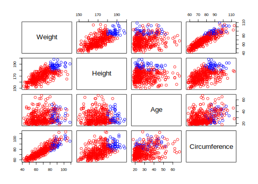

Exercise 7: Graphics
Plot the heights versus the weights for all observations in bodydata.
with(bodydata, plot(x = Height, y = Weight))
Spice up the plot
Check out the presentation for lesson 1 to see how to spice up the plot
Explore the ?par help file
Use the isBoth variable to create a color vector
mycolors <- ifelse((isHeavy & isTall), "blue", "red")Here, isHeady & isTall returns a logical vector. The ifelse function returns blue if TRUEand red if FALSE for each elements of the logical vector. The colors are then used in the plot so that all the Heavy and Tall person will be colored “blue” and rest as “red”.
Use “mycolors” in the col argument of the plot function to mark the tall and heavy individuals
Plot all variables against each other
pairs(bodydata, col = mycolors)
Which variables are least correlated to each other?
Age and Height variables seems to have least correlation.
Check by,
cor(bodydata) Weight Height Age Circumference
Weight 1.000 0.7208 0.1870 0.899
Height 0.721 1.0000 0.0482 0.545
Age 0.187 0.0482 1.0000 0.355
Circumference 0.899 0.5448 0.3547 1.000This returns the correlation matrix for the variables, and the guess made earlier true. Further, check out the help file for pairs, and the examples at the end. Try to make a pairs plot with scatter plots with smoothed lines in the lower left triangle, histograms on the diagonal, and correlation numbers in the upper right triangle.
Lets first create a function which create histogram. The function will later be used in the pairs function to create its diagonal plots.
panel.hist <- function(x, ...) {
usr <- par("usr"); on.exit(par(usr))
par(usr = c(usr[1:2], 0, 1.5) )
h <- hist(x, plot = FALSE)
breaks <- h$breaks; nB <- length(breaks)
y <- h$counts; y <- y/max(y)
rect(breaks[-nB], 0, breaks[-1], y, col = "cyan", ...)
}Now, create a function that will display correlation on pairs plot.
panel.cor <- function(x, y, digits = 2, prefix = "", cex.cor, ...) {
usr <- par("usr"); on.exit(par(usr))
par(usr = c(0, 1, 0, 1))
r <- abs(cor(x, y))
txt <- format(c(r, 0.123456789), digits = digits)[1]
txt <- paste0(prefix, txt)
if (missing(cex.cor)) cex.cor <- 0.8 / strwidth(txt)
text(0.5, 0.5, txt, cex = cex.cor * r)
}Now, the above functions are implemented on the pairs plot,
pairs(bodydata,
lower.panel = panel.smooth,
upper.panel = panel.cor,
diag.panel = panel.hist)
Here the panel.smooth deals with the smooth line on the lower panel of pairs plot.
Note:: Chapter 5 of the R book contains numerous examples of graphics. Note:: For those interested in playing around with plots in R checkout: http://r4ds.had.co.nz/data-visualisation.html